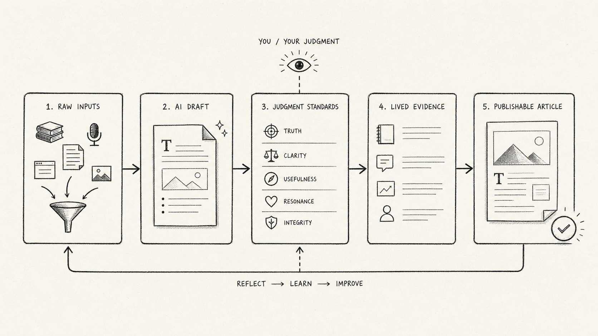

AI 给了我一篇完整文章，但我知道它不能发
很多人用 AI，不是越用越清楚，而是越用越焦虑。因为 AI 太容易给我们一种“完成了”的错觉。
我最近有一个很强烈的感觉：很多人用 AI，不是越用越清楚，而是越用越焦虑。
这句话有点反直觉。按理说，工具更强了，效率更高了，我们应该更轻松才对。以前要查资料、写大纲、改文章，可能要花一下午；现在把问题丢给 AI，几秒钟就能得到一篇结构完整、语气顺滑、看起来还挺像样的东西。
但问题也出在这里。
它太快了，太完整了，太像答案了。于是你很容易产生一种错觉：好像只要我再学几个 prompt，再收藏几个模板，再换一个更强的模型，我就能把事情做起来。
我以前也是这么想的。我会认真记那些 prompt 技巧：先告诉 AI 你是谁，再告诉它任务是什么，再规定输出格式，最后补一句“请一步一步思考”。这些当然有用，至少比一句“帮我写篇文章”要强很多。
但我最近整理自己的“缩思所想”时，突然发现一件有点尴尬的事：很多时候，不是 AI 不会回答，是我自己不知道什么样的回答算好。
这才是最麻烦的地方。
AI 最容易给人的错觉：它已经替你想完了
前几天我让 AI 帮我整理一篇文章。我把一堆素材都丢进去：AI、内容创作、普通人机会、公众号、抖音、prompt、输出评估、个人品牌。它很快给了我一篇文章。
标题有。结构有。金句也有。甚至结尾还有一点情绪。
但我读完以后，心里很空。
那篇文章没有明显错误，逻辑也通顺，可是它不能发。因为它太像“一篇文章”了，却不像“我的文章”。它没有我真正卡住的地方，没有我说话时那种绕了一圈终于想明白一点点的感觉，也没有那些具体到有点狼狈的生活细节。
这就是 AI 最危险，也最容易让人上瘾的地方：它会给你一种“完成了”的感觉。
可完成，不等于有用。AI 给你的往往是一个“像答案的东西”，但你还要判断它是不是你的答案。
你可能也有过这种体验。你让 AI 写一个方案，它给你五条建议；你让 AI 写一篇文章，它给你三段结构；你让 AI 帮你分析一个问题，它给你一套看起来很专业的框架。你看完之后觉得都对，但关掉页面以后，自己还是不知道下一步要干什么。
这时候问题就不是 prompt 了。
问题是你没有判断标准。
- 这段话像不像我会说出来的东西？
- 里面有没有真实经历、真实细节、真实判断？
- 读者看完以后，是更清楚了，还是只是觉得“好像挺对”？

真正难的不是写出来，是判断什么值得写
我以前听卡兹克大神讲过一个很简单的内容创作框架：获取信息 30，找角度 60，创作 10。
当时只是随手写的，但现在越想越觉得，它其实也适用于 AI。
很多人把精力放在最后的 10，也就是“怎么让 AI 写得更好”。他们会研究提示词、模型、插件、工作流，研究怎么让输出更长、更顺、更像专业文章。
但真正决定结果的，往往是前面的 90。
你有没有足够真实的输入？你有没有找到一个别人没想到、但读者一听就懂的角度？你有没有能力判断，这个答案到底适不适合你？
这些东西，AI 不能替你完成。
普通人真正要训练的，不只是提问能力，而是判断能力：判断什么值得写，什么像自己，什么只是顺滑。
AI 可以帮你生成十个标题，但它不知道哪个标题更像你。AI 可以帮你写一段故事，但它不知道哪个细节最真实。AI 可以帮你总结一个观点，但它不知道这个观点为什么会让你在某个晚上突然停下来。
好文章不是先讲道理，而是先让人看见生活
比如我之前整理过一篇“像素级复刻文章”的骨架结构。
那篇文章的开头很有反差：16 年前的我，通信工程挂高数，老师把我叫到办公室谈话；今天的我，移动端团队经理，跨境电商老板，AI 创业新人。
如果只是照抄这个结构，很容易写成一篇“普通人逆袭文”。这篇文章读起来就很有代入感，但我真正想借鉴的不是它的故事，而是它处理情绪的方式。
它不是一上来讲方法论，而是先把一个人的处境摆出来。先让你看到一个不体面、不确定、甚至有点狼狈的起点，然后再慢慢告诉你，这个人是怎么一步一步走到今天的。
这种写法为什么有用？
因为它先给证据，再给结论。先让你看到生活，再让你相信观点。
我自己那段迷茫中选择重新 remake 的经历也是这样。
如果我只写一句：“我很早就学会了靠自己选择。”这句话对，但很空。你看完不会有什么感觉，因为它像所有人的总结。
但如果我写：
本科那几年，我其实一直没太想明白自己要去哪。GIS听起来挺像样，但原理不懂，概念不清老师把我叫到办公室谈话，说这样下去毕业都难。那种时候，你很难真的相信自己有什么清晰的人生规划。更多时候只是觉得，眼前这条路好像越走越窄，但又不知道还能往哪里拐。
后来与师兄师姐以及父辈大佬聊天回来，我第一次认真想，能不能通过一往无前的勇气，把自己重新放到一个新的环境里。最后我做的选择很现实：勇闯高峰，把自己丢到严苛环境下锤炼。对我来说，从四年世俗意义上较为圆满的"不错"到未知领域突破舒适区总会有一点点不舒服，但它能不能给我一次重新开始的机会。
再后来进liesmars，陌生环境，陌生领域，一个人但只有一颗主动的心，论文根本看不懂，同学根本不认识，老师根本不熟悉，只能鼓起勇气干中学，主动不害怕拒绝。那段时间我经常在回家的路上想：我到底为什么会跑到这里来？但也是那段时间我慢慢发现，陌生领域没有想象中那么吓人，只要你愿意啃，它就会一点点露出入口，也因此认识了好多志同道合的朋友。
这个细节就不一样了。
它不是什么热血逆袭，也没有突然开挂。它更像一个很普通的人，在很迷茫的时候，先抓住一个能抓住的选择，然后硬着头皮往前走。你会看到这个人当时为什么会那么想，为什么会那么做，也会更容易相信后面那句话：我不是天生就会选择，我只是慢慢知道了，选择这件事，有时候不是等你准备好了才开始，而是在你还很不确定的时候，先把自己放到一个可能发生变化的地方。
内容是这样，AI 也是这样。
真正有力量的东西，不是 AI 帮你总结出来的那句漂亮结论，而是你能不能从自己的经历里，找到支撑这个结论的证据。
所以我现在越来越觉得，普通人用 AI，最该训练的不是提问，而是判断。
判断一个素材里真正有价值的，是信息，还是情绪。判断一段回答看起来完整，是真的能用，还是只是顺滑。判断一个工具到底是在帮你推进，还是让你更快地绕圈。
这件事没有那么酷。
它不像“一个 prompt 让效率提升十倍”那么容易让人兴奋，也不像“AI 自动帮你赚钱”那么有传播感。但它更接近真实。
- 先留下原始输入，不急着包装成观点。
- 再找生活证据，让结论有一个可以站住的地方。
- 最后用 AI 做整理、对照、补洞，而不是让它替你决定方向。
因为普通人真正的机会，从来不是突然拥有一个神奇工具，然后人生开挂。更可能是你开始把每天那些乱七八糟的输入、困惑和反思，慢慢整理成自己的判断力。
今天看到一个观点，你能拆出里面的事实、情绪和争议点。明天用 AI 写一篇文章，你能判断它哪里像你，哪里不像你。后天你再回头看自己的输出，你能发现什么内容让人保存，什么内容让人回复，什么内容只是看起来热闹。
这些东西一开始都很碎。
但碎东西如果每天都留下来，它慢慢就不是碎片了。它会变成你的素材仓库，变成你的表达习惯，变成你的判断系统，也变成别人看到你时能感受到的某种稳定信号。
我为什么还要继续写这些反思
这才是我现在写这些反思的原因。
不是因为我已经想明白了，也不是因为我比别人更自律。说实话，我很多时候也只是把脑子里一团乱的东西先倒出来，有时候一句话，有时候几个关键词，有时候中英文混在一起，看起来并不完整。
但我不想让这些混乱白白过去。
如果今天的一个困惑，能被我整理成一个问题；如果一个问题，能被我整理成一段表达；如果一段表达，能慢慢变成我自己的判断力，那这一天就没有完全浪费。
AI 不会自动让你变强。
它只会放大你原来的样子。
你模糊，它就放大你的模糊；你清楚，它就放大你的清楚。你有判断，它就是杠杆；你没有判断，它就只是噪音。
所以我现在反而没那么急着追新工具了。我当然还是会学，也会试，但我更想先把自己的问题讲清楚，把自己的素材留下来，把自己的判断一点点磨出来。
我还不知道这件事最后会把我带到哪里。
但至少现在，我知道这些反思没有白写。它们让我从一堆混乱的信息里，慢慢看见自己真正关心什么，也让我在这个变化很快的时代里，不至于只是被工具推着走。
我还是一个普通人。
但我开始有一点点确定：只要我每天还能把今天的困惑整理出来一点，今天就没有完全浪费。
这大概就是我现在继续写下去的原因。